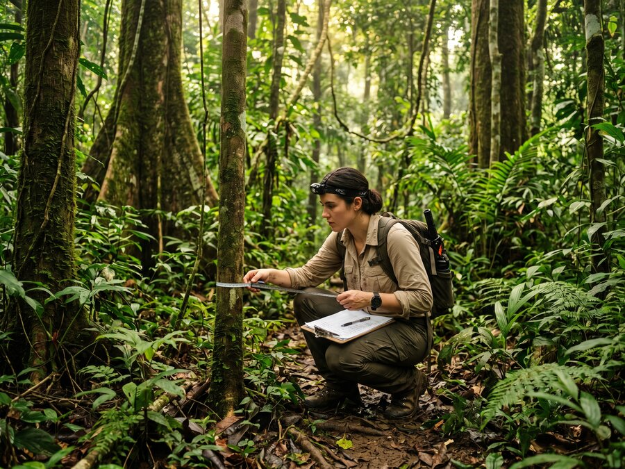
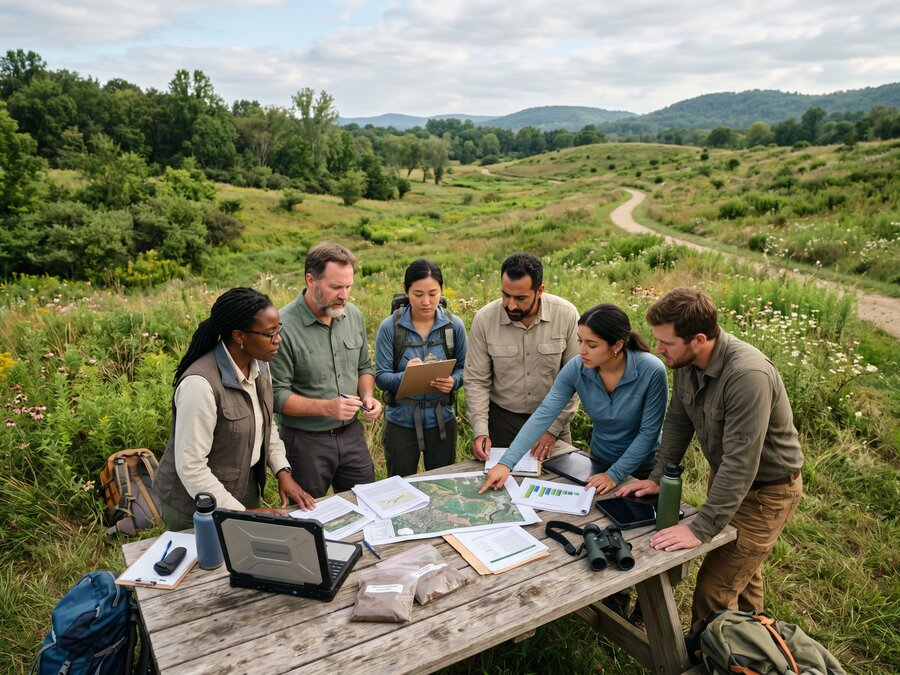

About Us
Our Technology
Proprietary Platform
Simulation-Based Ecological Engineering
The Platform
Rebuilding Native Ecologies at Scale
With 47% of the world's trees gone and countless other primary ecosystems in decline, our technological capacity to recreate native ecologies, regenerate full biodiversity, mimic primary habitats of symbiotic flora and fauna systems, and stabilise food chains is paramount to Earth's environmental recovery.
GEP's technology is poised to digitally remediate and optimise degraded landscapes and oceanscapes, providing tailored solutions to ecosystem collapse, deforestation and land degradation, as well as monoculture-driven land fatigue.
By modelling native ecologies and their interdependencies, our approach enables the regeneration of biodiverse systems that are structurally stable over time. This ecological complexity supports more resilient and enduring carbon sequestration, allowing carbon generation to continue well beyond the formal life of a project as ecosystems mature, adapt, and self-regulate.

Core Capabilities
What the Platform Does
Ecosystem Modelling
AI-driven simulation of primary ecosystem architecture — modelling species interdependencies, soil systems, hydrology, and successional dynamics before a single seed is planted.
Digital Twinning
Each restored landscape has a living digital twin that monitors, records, and adapts in real time — providing verifiable data for carbon and biodiversity credit certification.
MRV & Data Banking
Monitoring, reporting, and verification capabilities powered by satellite observation, aeronautic data collection, and secure ecosystem data banking — audit-ready for institutional and regulatory standards.
Iterative Optimisation
Each project iteration improves the system's accuracy and predictive capacity. Our forests are not static assets — they are living systems that continue to learn, adapt, and optimise over time.
Landscape Remediation
Tailored solutions for ecosystem collapse, deforestation, land degradation, and monoculture fatigue — across forest, dryland, coastal, and delta environments.
Carbon Performance
Durable carbon sequestration that continues well beyond the formal project lifecycle — as ecosystems mature, self-regulate, and generate verifiable credits over generational timescales.

Expert Support
Rigour Behind Every Stage
This work is supported by leading experts in simulation and optimisation, environmental data collection, artificial intelligence, aeronautics, and satellite-based observation — ensuring that technological rigour underpins every stage of ecosystem design, regeneration, and long-term stewardship.
- Simulation and optimisation specialists
- Environmental data collection and AI researchers
- Aeronautics and remote sensing engineers
- Satellite-based observation systems
- Ecosystem science and biodiversity experts